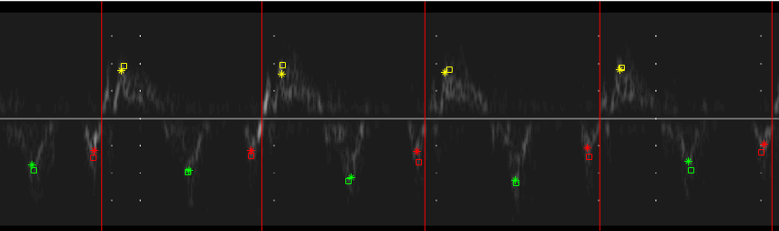

We have developed a network capable of accurately detecting multiple heartbeats and S', E' and A' keypoints for each from variable length tissue doppler imaging strips.

Dataset
Pulsed-wave tissue Doppler traces were acquired from 48 patients (30 male). Patients had a mean age of 64±11 years. The patients investigated were recruited from patients who had undergone echocardiography with Imperial College Healthcare NHS Trust. Only patients in sinus rhythm were included. No other exclusion criteria were applied. The study was approved by the local ethics committee and written informed consent was obtained. Each patient underwent standard tissue Doppler assessment of left ventricular function by an experienced echocardiographer. The operator was advised to optimise the images as would normally be done in clinical practice. For all acquisitions, the sample volume size was 5 mm with a sweep speed of 75 mm/s. Traces from both the septal and lateral annuli were acquired for 30s each. This entire process was conducted three times, with the probe removed from the chest and then placed back on the chest optimally between each recording. A total of six 30-second recordings (three at the septal annulus and three at the lateral annulus) of tissue Doppler data were acquired for each patient.
In the example image, each cardiac cycle is indicated by a red vertical line with annotations from two trained experts for each keypoint. Expert 1 is a cross, with expert 2 a square.
Network Architecture
The architecture comprises an object detection model for the isolation of complete heartbeats followed by a keypoint localisation network to identify the S', E' and A' landmarks in each beat object. A sliding window approach was adopted to ensure all possible beats were detected and ensure full utilisation of the available data.
In the example image, bounding boxes generated by the object detector and keypoints localised by the network are displayed.